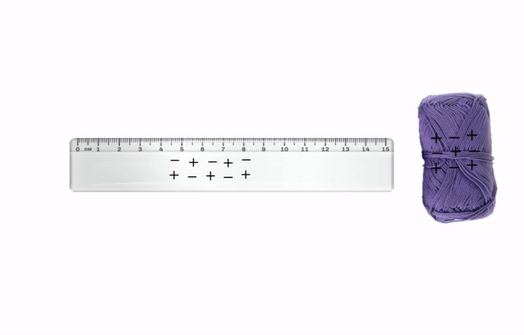
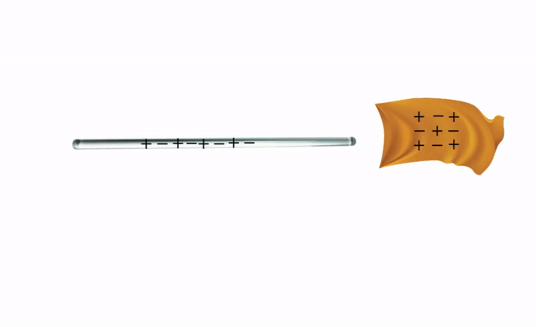

• Siswa dapat mengidentifikasi jenis-jenis muatan listrik.
Pada umumnya jumlah elektron dan proton pada atom sebuah benda adalah sama, sehingga atom-atom pada benda tidak bermuatan atau netral. Jika benda tersebut netral, maka benda tersebut dapat diubah menjadi bermuatan. Salah satu cara untuk mengubah benda menjadi bermuatan adalah dengan menggosokkan benda. Ketika dua benda saling digosokkan, maka elektron dari benda yang satu akan pindah ke benda yang lain, sehingga benda yang melepas elektron (kekurangan elektron) akan bermuatan positif, dan benda yang menerima elektron (kelebihan elektron) akan bermuatan negatif. Agar lebih mudah memahami muatan listrik, kamu dapat membuat benda bermuatan dengan melakukan simulasi di bawah ini.
Simulasi 1 Membuat benda bermuatan
Bagaimana kesimpulan hasil simulasi yang kamu lakukan? Jika kamu melakukan dengan benar kamu akan mengetahui bahwa balon digosok dengan kain maka elektron akan pindah dari kain ke balon. Balon menjadi bermuatan negatif, dan kain yang kehilangan elektron menjadi bermuatan positif. Balon dan kain akan tarik-menarik karena memiliki muatan yang tidak sama. Sebaliknya dua balon akan tolak-menolak karena memiliki muatan yang sama. Dengan demikian ada dua jenis muatan yaitu muatan positif dan negatif, setiap muatan yang sejenis akan tolak menolak sedangkan muatan yang tidak sejenis akan tarik menarik.
Video 2 Percobaan membuat benda bermuatan
Tonton video terlebih dahulu!
Setelah menyaksikan video di atas dapat disimpulkan bahwa batang kaca yang digosokkan pada kain sutra akan bermuatan positif dan penggaris plastik yang digosokkan pada kain wol akan bermuatan negatif. Dengan demikian ada dua jenis muatan yaitu muatan positif dan negatif, setiap muatan yang sama akan tolak menolak sedangkan muatan yang berbeda akan tarik menarik.
|  |  |
Gambar 2 Penggaris Plastik dengan Wol dan Batang Kaca dengan Kain Sutra